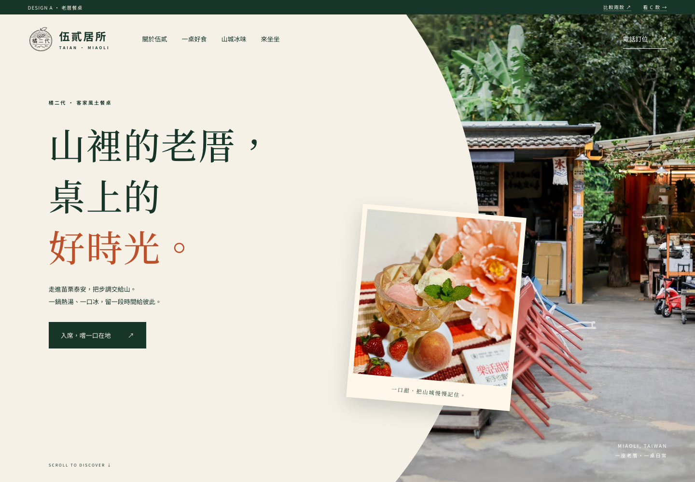
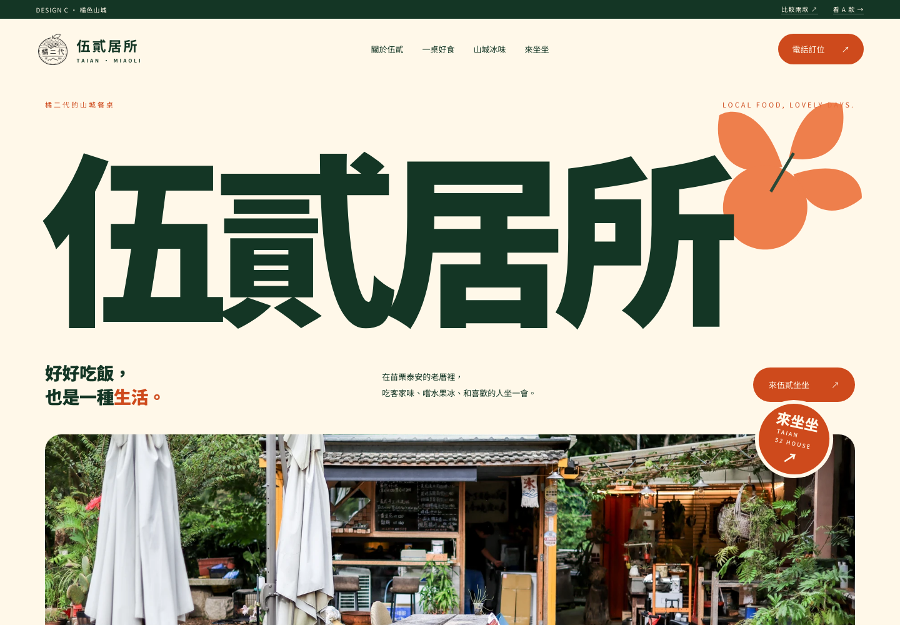

A · AVELINE 方向老厝餐桌明體大標、曲線留白、攝影疊層。把吃飯變成一段值得慢下來的山城時光。溫暖 · 安靜 · 老屋質感 · 編輯式敘事進入 A 款完整預覽 ↗查看原始風格參考 Aveline
C · DINE 方向橘色山城巨大品牌字、橘綠配色、圓潤圖形。讓老厝、客家餐桌與在地水果有共同的品牌表情。鮮明 · 親切 · 農產連結 · 品牌記憶進入 C 款完整預覽 ↗查看原始風格參考 Dine